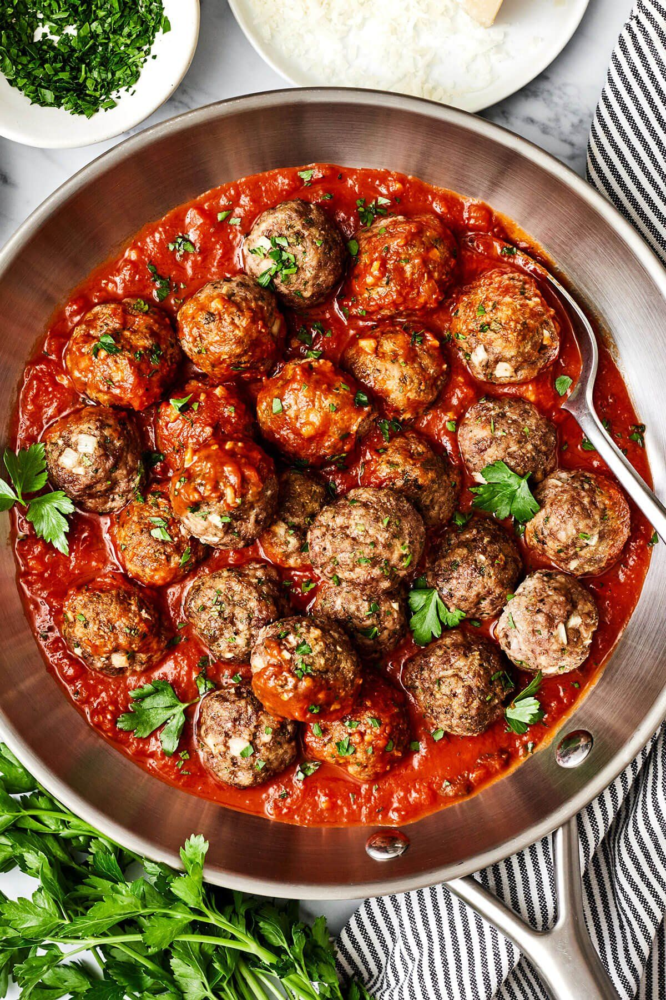

Home

Meatballs recipe:
A simple, quick set of meatballs good for any spaghetti.
Ingredients:
- Jelly
- Chili sauce
- Cayenne
- Meatballs
Steps:
- Gather the ingredients.
- Combine grape jelly, chili sauce, and cayenne pepper in a saucepan over medium-hgh heat; cook until war, 5 to 10 minutes.
- Place meatballs in a slow cooker and top with grape jelly mixture.
- Cook on Low for 3 to 4 hours.
- Serve warm and enjoy.